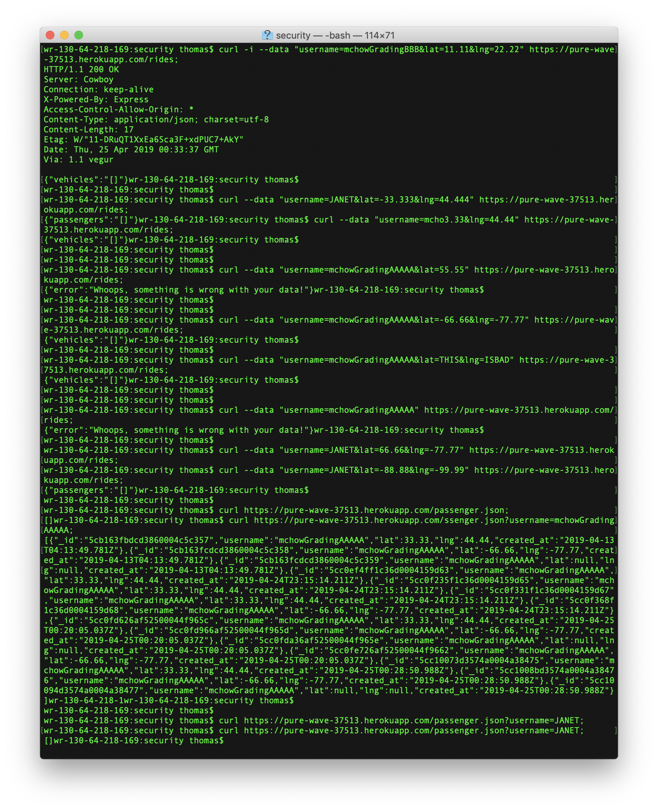
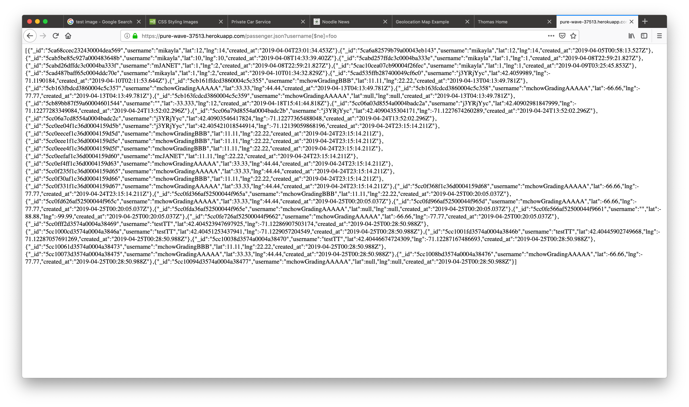
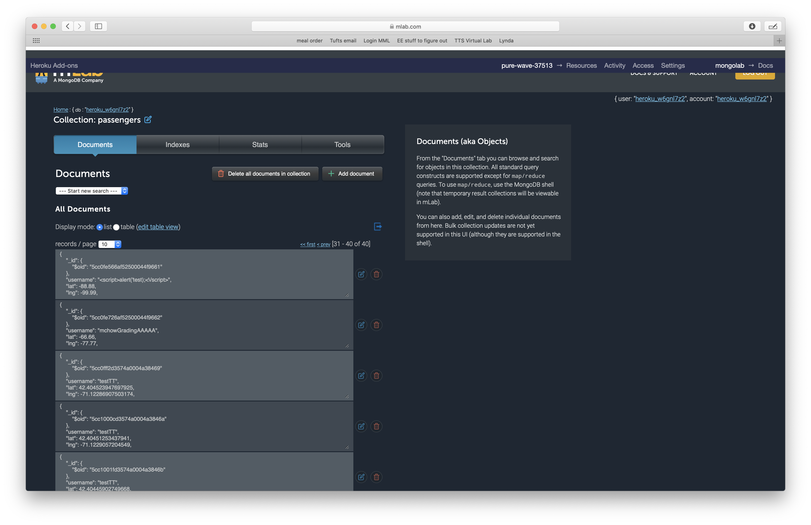
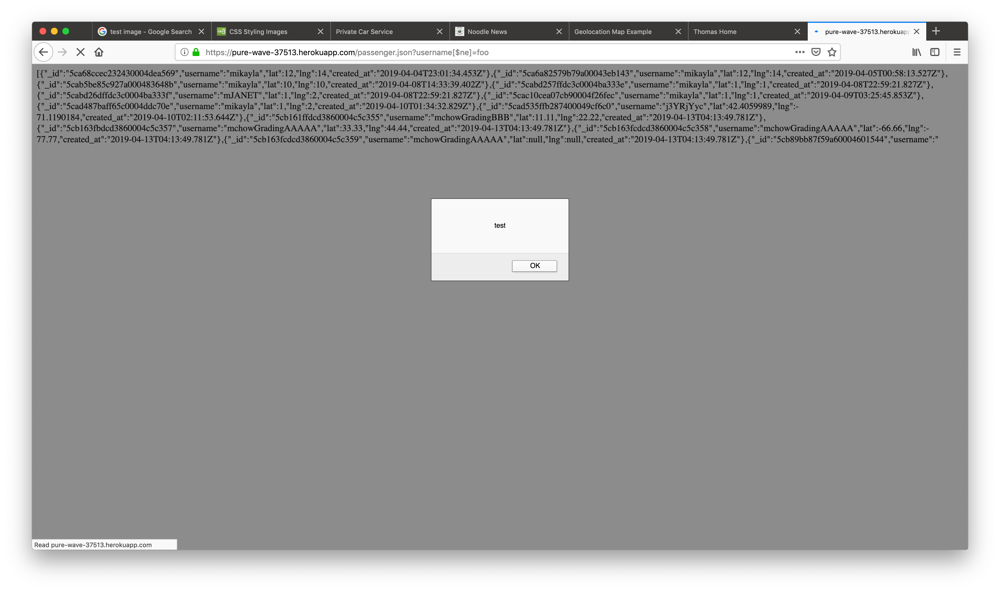
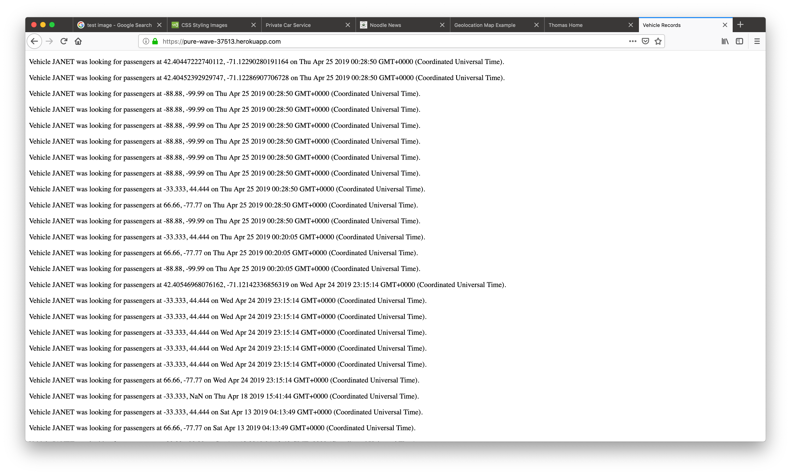
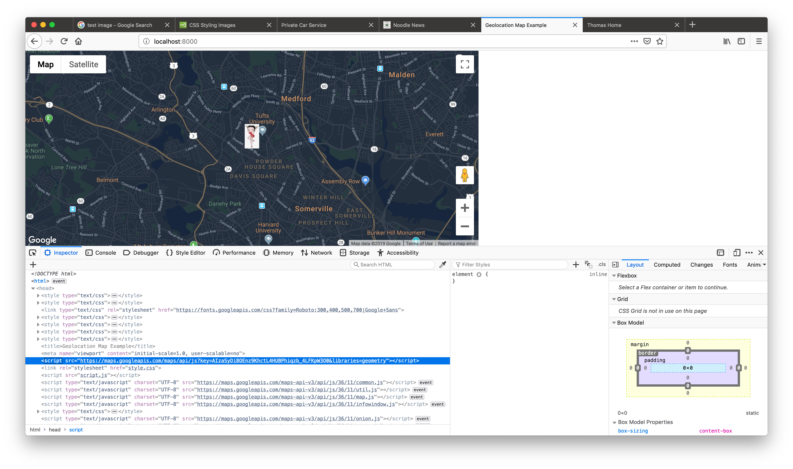
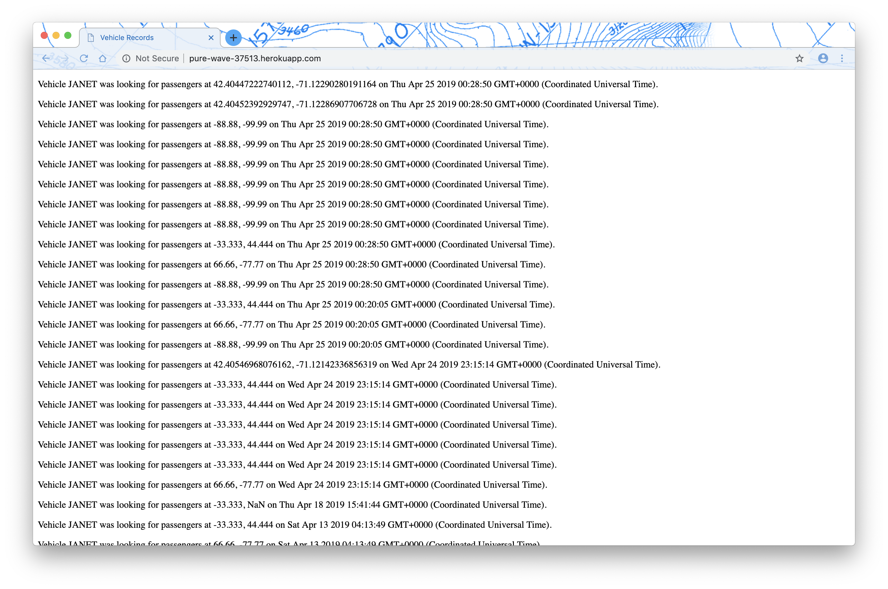
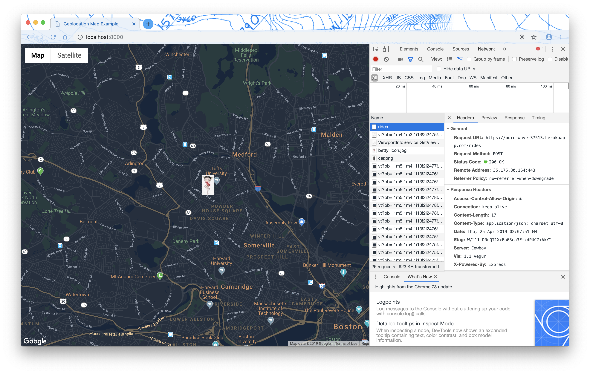

When accessing /passenger.json, if the username is specified as username[$ne]=notaPassenger, the site will report all passengers and their locations. This is a privacy problem; As a passenger, I would not want all my whereabouts publically available. To me as a passenger, this is a high severity issue since; if the public found that their locations were just publically available, they would be furious.

Resolution: Add an extra check before sending the GET response to ensure that all the usernames match the provided one.
The server side javascript does not use a validator. This is just bad practice. This is mostly a bad programming practice. I could not find a way to get scripts into the drivers database, but it was easy to get them into the passengers datbase.

I found one way to get attacked by this cross site script: using the aformentioned database injection. When you examine all passengers, the script runs.

This issue is of medium severity. While I found few venues for the scirpt to work, it go into the database.
Resolution: Run the username through a validator before inserting into the database.
On the home page, where all the drivers are listed, their usernames are listed out in the open. While this alone is not an issue, the username is the only item required to pretend to be that user. No password is used. This means that any malicious attacker could flood the service with fake locations, pretending to be any of the drivers who used the service. Since this makes the service very vulnerable to malicious persons, this is a high severity issue. Exploiting this issue would make the service unusable.

Resolution: Either give each driver a unique identifier other than their username and display that on the home page or add a password to the POST route. Properly handling passwords is a class or project of its own, so use a credential API.
When accessing the client side of the liftknockoff service, the Google Maps API key is part of the HTML. This alone is not an issue. The problem is that no specific website is serving the client side. Therefore, it is not possible that the API key is restricted to a specific website. Anyone could take the API key and use it for their website or service, while Google would hold you responsible for their actions. In Google's words, "Publicly exposing unsecured credentials can result in unintended use, which could lead to unexpected charges on your account." This is a low severity issue; if found, an attacker would have to be malicious and want to cause Google to charge you or have a use for a Google Maps API key. A malicious attacker could just use your service a lot instead though and have the same effect as using you API key.

Resolution: Have an API key specific to this project, pick a site to host the client app on, and restrict the API key to that website. Then monitor your API key for unexpected usage.
In general, it is best practice to use secure protocols for web applications. This application allows for the use of both http and https to access the site. It would be better to redirect all traffic to the https version of the site. This is a low priority issue since a man in the middle attack would be required to exploit this on the website. Https would encript all traffic. Below is a picture of accessing the site using http. Chrome identifies this as "Not Secure"

Resolution: On the server side, redirect all http traffic to the https site. See references for stackoverflow directions on how to do that.
In general, it is best practice to use secure protocols for web applications. This application uses POST for sending and retreiving secure data. Since username is the only credential for identifying the user, it should be treated as if it were a password. The POST protocol therefore is inappropriate for this situation. Instead, use SSL (https) to send user's location and get passenger or vehicle list. This is a low severity issue since it requires a man in the middle attack to exploit.

Resolution: Send client username and location over SSL (https).
In future, privacy needs to be part of the planning of a web application from the start. The whole project should be structured with security and privacy in mind. Furthermore, best practices with respect to database usage and taking user input must also be followed. Database injection and Cross Site Scripting should not be issues-- the code should be written to deal with them from the start. This project seems to have several major flaws and needs a lot of work.
Ming Chow's COMP 20 lectures (ALL), Spring 2019